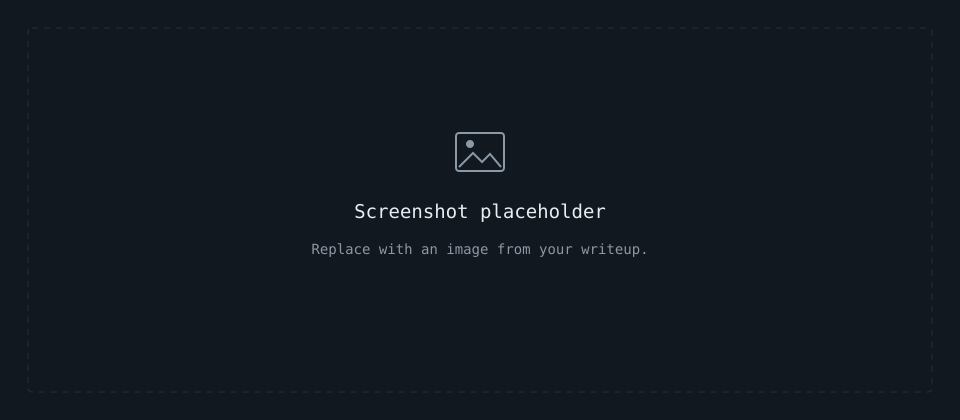

Overview
[Short description]
[State the scope and objective. Use inline code for commands, filenames, and identifiers.]
Challenge
[Challenge description]
- [Provided material]
- [Objective or constraint]
Investigation
[Investigation process]
- [First step and observation]
- [Next step and reasoning]

For a real screenshot, create an images/ folder beside this page and use a local image path:
html
<figure>
<img src="images/screenshot.png" alt="[Describe the screenshot]" loading="lazy">
<figcaption>[Screenshot caption]</figcaption>
</figure>Commands Used
[Commands and their purpose]
bash
command goes heretext
[Relevant command output goes here]Findings
[Important findings]
| Item | Observation | Significance |
|---|---|---|
| [Item] | [Observation] | [Why it matters] |
| [Item] | [Observation] | [Why it matters] |
[Add a descriptive link to supporting evidence, another writeup, or a source.]
Lessons Learned
- [Lessons learned]
- [What to improve or investigate next]